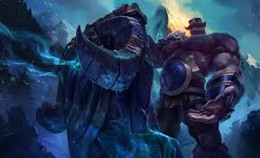

tu devrais essayer Braum, le Coeur de freljord!

braum est un tank équiper d'un collossale bouclier lui permettant de bloquer les dégats dans une direction, il peut ainsi secourir un alié en danger ou stopper un combat trop mal engager, un véritable ange gardien